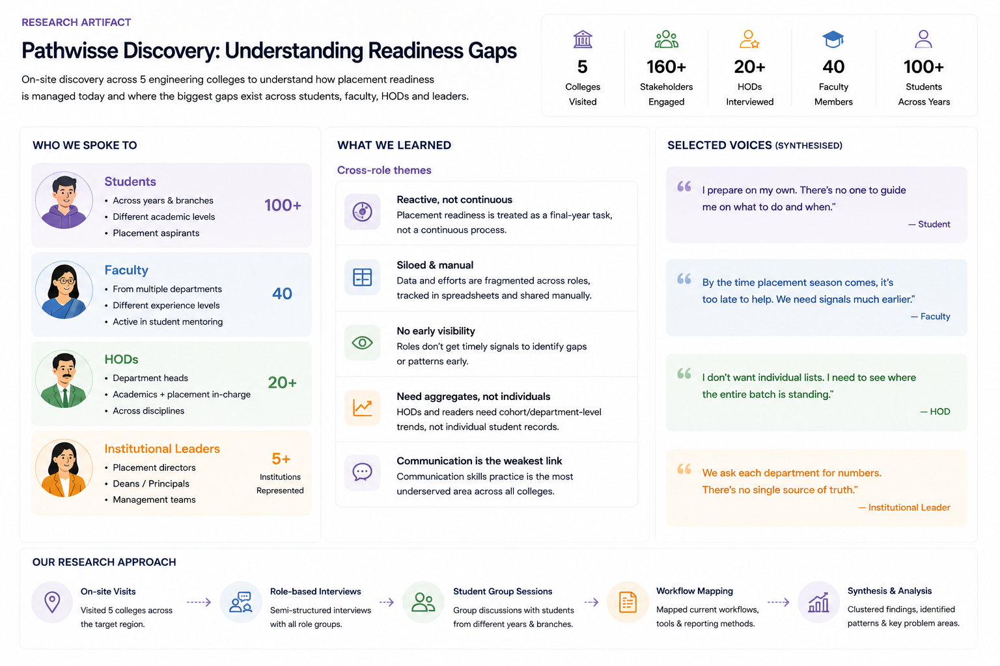

Product Context
Pathwisse is a B2B student success platform connecting academic management, career development and placement preparation across student, faculty, HOD and management portals.
Student activity flows into faculty tracking, department-level oversight and institutional reporting, allowing colleges to identify readiness gaps earlier rather than discovering them during placement season.
The Fragmented Student-Success Problem
Before Pathwisse, the picture looked like this across every college we visited:
The problem was not the absence of content. It was the absence of a connected system showing whether students were becoming placement-ready.
Discovery Across Five Colleges
Discovery was conducted on-site across five colleges with more than 160 stakeholders spanning students, faculty, Heads of Department and institutional leaders. The goal was to understand how placement readiness was currently tracked, where visibility broke down and when intervention happened.
The visual below summarises the participant groups, research approach and recurring themes identified during synthesis.

Discovery was a shared team effort. My ownership was synthesis, problem definition and requirements — see Section 07 for the full breakdown.
Key Research Insights
Students needed direction, not another content library
Access to practice material was not the problem. Students needed a guided roadmap that connected their academic stage to a concrete path toward placement readiness.
Faculty needed early intervention signals, not end-of-term reports
By the time placement season started, it was too late to intervene meaningfully. Faculty needed visibility throughout the academic cycle, not just at the end.
HODs needed cohort patterns, not individual student records
HODs did not want to track individual students. They needed department-wide summaries that let them identify systemic gaps without reviewing case by case.
Management needed institutional visibility without manual consolidation
Institutional management could not compare placement readiness across departments. Every report was produced on demand, manually, by request from each HOD.
A supporting insight — communication skills were consistently underserved across all five colleges — is covered in depth under Section 10: Practice Labs.
The Product Decision
Roadmap decisions were shared with the core team. I contributed problem synthesis and requirements; strategy and commercial positioning were team decisions.
How the Four-Role Platform Works
Pathwisse is structured around a shared data layer connecting all four portals. A student's activity becomes visible to assigned faculty, aggregated for the HOD, and rolled up for management — each role seeing only what is relevant to their function.
Student Portal
Career roadmap, daily practice (aptitude and communication), AI mock-interview agent, progress dashboard and opportunities layer. Built so students know what to do next, not just what is available.
Faculty Portal
Assigned student tracking with engagement and progress signals, readiness milestones and intervention flags for students falling below threshold — surfaced continuously, not only at assessment time.
HOD Portal
Department-wide placement readiness by batch, year and course. Aggregate view that lets HODs spot systemic gaps without reviewing individual student records.
Management Portal
Cross-department placement readiness and engagement reporting at institutional level — the view management previously could only get by requesting reports from each HOD individually.
My Ownership
Pathwisse is a team product. This is an accurate account of what I owned, what we shared, and what engineering owned.
- Research sessions and synthesis
- Problem definition
- PRDs and user flows
- Permission mapping
- UX direction
- Acceptance criteria
- UAT
- Product demonstrations
- Feedback synthesis
- Product strategy
- Roadmap priorities
- Pilot planning
- Institutional positioning
- Commercial decisions
- Technical architecture
- Frontend development
- Backend development
- Infrastructure
- Deployment
Deep Dive: Tracking & Intervention
The most consistent request from faculty was not a feature — it was a timing problem. They wanted to know about struggling students before placement season, not during.
Engagement signals
Daily and weekly activity tracked at the individual level. Faculty see recency, frequency and streak information without querying the student directly.
Progress signals
Readiness milestones tracked against expected pace for the student's year and career roadmap. Progress falling below threshold triggers a faculty flag, not a final-year crisis.
At-risk thresholds and intervention
Flags are surfaced to the faculty member, not pushed to the student as a system alert. The system surfaces the signal; faculty decide when and how to intervene.
HOD aggregate patterns
At department level, the HOD sees the proportion of students at risk — not individual flag lists. Intervention at HOD level is about patterns, not cases.
Deep Dive: Career Roadmaps
Career roadmaps answer a specific question: given where this student is right now, what do they need to do to become placement-ready in their chosen career path?
Target career selected by the student
Skill requirements mapped against the student's current academic stage
Structured progression generated covering skill areas to develop
Practice connected to the roadmap rather than to generic topic lists
Milestones updated through completion so students always know where they stand
Current personalisation is structured and rule-based, not dynamically adaptive. A student who covers aptitude skills quickly moves faster through that layer; a student weaker on communication gets more practice time allocated there. True adaptive personalisation — where the system changes in real time based on individual performance patterns — is a future capability.
Deep Dive: Practice Labs & AI Mock Interviews
Practice Labs addresses the gap that all five college visits surfaced: students had some path to aptitude preparation but almost no structured path to communication and interview readiness.
Aptitude practice
Daily exercises covering quantitative reasoning, verbal ability and logical reasoning. Designed for short daily sessions rather than long study blocks, with difficulty adapting based on performance.
Communication practice
Structured exercises for clarity, confidence and structured response. Covers both written and spoken communication, with scenario-based prompts drawn from real placement interview patterns.
AI Mock Interview Voice Agent
The AI mock interview agent is a voice-based system that simulates a real interview conversation. The student speaks their answers; the agent responds with follow-up questions and evaluates clarity, structure and content.
Why voice, not text
The gap students struggled with was not knowing what to say — it was saying it fluently under pressure. Text-based practice does not replicate that. Voice does.
Design decisions I owned
User flow for the interview session, edge cases (connection drop, mic permissions, no-answer handling), feedback display requirements, and acceptance criteria for evaluation quality.
Student selects interview type and difficulty
Voice agent introduces itself and begins with a warm-up question
Student answers by speaking; agent listens and evaluates clarity, structure and content
Agent follows up with a contextual question based on the previous answer
Session ends with a summary of performance across clarity, structure and content dimensions
Validation & Onboarding
Four colleges completed onboarding. The path from research to conversion was built on demonstrations to the actual stakeholders we met during discovery.
College research across five institutions
Product demonstration across all four role-based portals
Stakeholder feedback collected and synthesised into product changes
Workflow changes and onboarding requirements documented
Pilot planning with the core team
4 colleges onboarded
I structured and delivered demonstrations across the four role-based portals, captured stakeholder objections and feature requests, and translated recurring feedback into product and onboarding improvements.
Current Limitations
Placement outcomes require a complete cycle
Outcome data — whether students who used Pathwisse placed better — requires a full placement cycle with instrumented tracking. That data does not exist yet.
Personalisation remains rule-based
Structured roadmap progressions are in place. True adaptive personalisation — changing in real time based on individual performance patterns — is a future capability.
AI interview evaluation is early-stage
The voice agent is live but in early development. Evaluation accuracy and question quality improve with more usage data. The feedback loop is still being established.
Opportunities functionality is not fully mature
The opportunities layer is scoped and designed. Full execution depends on institutional partnerships and commercial agreements not yet in place.
Metrics to Measure Next
Product Learnings
Discovery changed the product direction
Visiting five colleges and meeting 160+ stakeholders before building anything produced a fundamentally different product than a desk-based assumptions document would have. The four-portal structure and the intervention-first faculty view were direct outputs of what we heard on-site.
Role-based products require role-based research
Every role had a different relationship with the same problem. HODs needed aggregates, not individual records. Faculty needed early signals, not end-of-term summaries. Building the right thing for each role required understanding each role independently before connecting them.
Clear acceptance criteria improved delivery and UAT
Writing acceptance criteria before build — not during or after — made UAT faster and less ambiguous. Issues found during UAT had a clear definition of "resolved" because the expected behaviour had been specified in advance.
The strongest product decisions were the ones we could trace to a real stakeholder problem, not the ones that sounded most impressive in a roadmap discussion.
Building Pathwisse
Flagship case study · B2B EdTech · 4 colleges onboarded